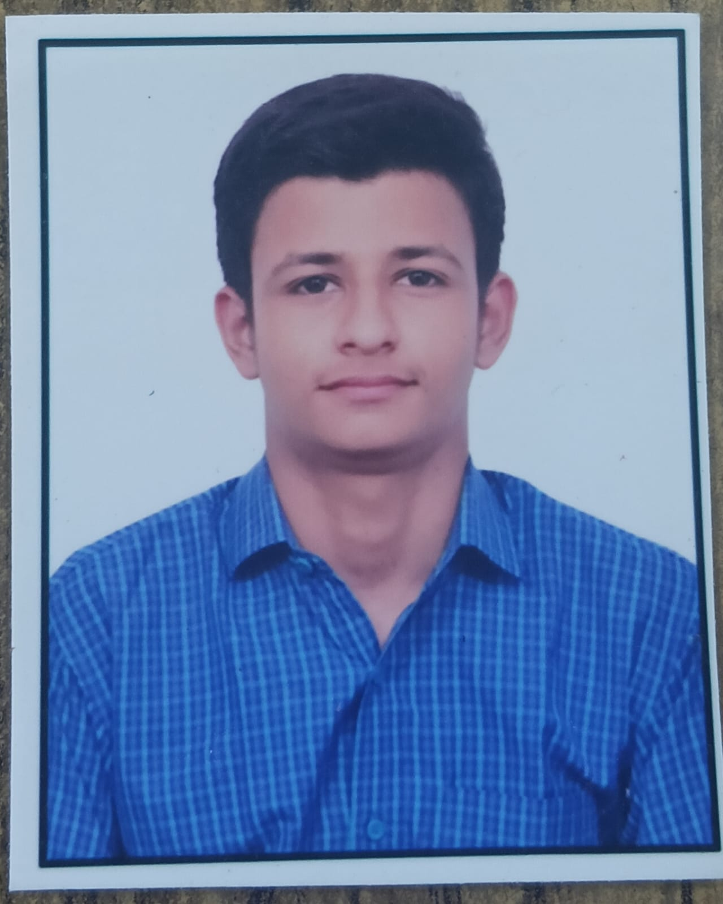

Economics Graduate | Finance Enthusiast | Social Impact Driven
Hello, I'm Vinayak Mohan Bajpai, an Economics graduate from the University of Lucknow with a keen interest in finance, business, and social impact. Coming from a family of teachers, I have always viewed education as a tool for learning and growth rather than just achieving grades.
I completed my schooling in the Science stream before discovering a strong interest in Economics. During graduation, I studied Economics along with Political Science and Mathematics, helping me develop analytical and critical thinking skills.
I also volunteered with Astradharini Foundation, contributing to community welfare and educational initiatives.
I aspire to combine my knowledge of economics and finance to create sustainable solutions that generate both social impact and long-term value. My goal is to contribute meaningfully to society while continuously growing as a professional.
Mob No: 6387552351
Email: bajpaivinayak48@gmail.com
LinkedIn: View My LinkedIn Profile